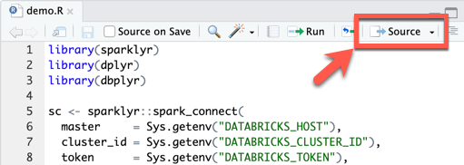
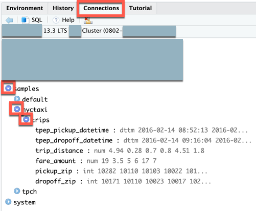

Databricks Connect for R
Note
This article covers sparklyr integration with Databricks Connect for Databricks Runtime 13.0 and above. This integration is neither provided by Databricks nor directly supported by Databricks.
For questions, go to the Posit Community.
To report issues, go to the Issues section of the sparklyr repository in GitHub.
For more information, see Databricks Connect v2 in the sparklyr documentation.
This article demonstrates how to quickly get started with Databricks Connect by using R, sparklyr, and RStudio Desktop.
For the Python version of this article, see Databricks Connect for Python.
For the Scala version of this article, see Databricks Connect for Scala.
Databricks Connect enables you to connect popular IDEs such as RStudio Desktop, notebook servers, and other custom applications to Databricks clusters. See What is Databricks Connect?.
Tutorial
This tutorial uses RStudio Desktop and Python 3.10. If you don’t have them already installed, install R and RStudio Desktop and Python 3.10.
For supplemental information about this tutorial, see the “Databricks Connect” section of Spark Connect, and Databricks Connect v2 on the sparklyr website.
Requirements
To complete this tutorial, you must meet the following requirements:
Your target Databricks workspace and cluster must meet the requirements for Cluster configuration for Databricks Connect.
You must have your cluster ID available. To get your cluster ID, in your workspace, click Compute on the sidebar, and then click your cluster’s name. In your web browser’s address bar, copy the string of characters between
clustersandconfigurationin the URL.
Step 1: Create a personal access token
Note
Databricks Connect for R authentication currently only supports Databricks personal access tokens.
This tutorial uses Databricks personal access token authentication for authenticating with your Databricks workspace.
If you already have a Databricks personal access token, skip to Step 2. If you are not sure whether you already have a Databricks personal access token, you can follow this step without affecting any other Databricks personal access tokens in your user account.
To create a personal access token:
In your Databricks workspace, click your Databricks username in the top bar, and then select User Settings from the drop down.
Click Developer.
Next to Access tokens, click Manage.
Click Generate new token.
(Optional) Enter a comment that helps you to identify this token in the future, and change the token’s default lifetime of 90 days. To create a token with no lifetime (not recommended), leave the Lifetime (days) box empty (blank).
Click Generate.
Copy the displayed token to a secure location, and then click Done.
Note
Be sure to save the copied token in a secure location. Do not share your copied token with others. If you lose the copied token, you cannot regenerate that exact same token. Instead, you must repeat this procedure to create a new token. If you lose the copied token, or you believe that the token has been compromised, Databricks strongly recommends that you immediately delete that token from your workspace by clicking the trash can (Revoke) icon next to the token on the Access tokens page.
If you are not able to create or use tokens in your workspace, this might be because your workspace administrator has disabled tokens or has not given you permission to create or use tokens. See your workspace administrator or the following:
Step 2: Create the project
Start RStudio Desktop.
On the main menu, click File > New Project.
Select New Directory.
Select New Project.
For Directory name and Create project as subdirectory of, enter the new project directory’s name and where to create this new project directory.
Select Use renv with this project. If prompted to install an updated version of the
renvpackage, click Yes.Click Create Project.
Step 3: Add the Databricks Connect package and other dependencies
On the RStudio Desktop main menu, click Tools > Install Packages.
Leave Install from set to Repository (CRAN).
For Packages, enter the following list of packages that are prerequisites for the Databricks Connect package and this tutorial:
sparklyr,pysparklyr,reticulate,usethis,dplyr,dbplyr
Leave Install to Library set to your R virtual environment.
Make sure that Install dependencies is selected.
Click Install.
When you are prompted in the Console view (View > Move Focus to Console) to proceed with the installation, enter
Y. Thesparklyrandpysparklyrpackages and their dependencies are installed in your R virtual environment.In the Console pane, use
reticulateto install Python by running the following command. (Databricks Connect for R requiresreticulateand Python to be installed first.) In the following command, replace3.10with the major and minor version of the Python version that is installed on your Databricks cluster. To find this major and minor version, see the “System environment” section of the release notes for your cluster’s Databricks Runtime version in Databricks Runtime release notes versions and compatibility.reticulate::install_python(version = "3.10")
In the Console pane, install the Databricks Connect package by running the following command. In the following command, replace
13.3with the Databricks Runtime version that is installed on your Databricks cluster. To find this version, on your cluster’s details page in your Databricks workspace, on the Configuration tab, see the Databricks Runtime Version box.pysparklyr::install_databricks(version = "13.3")
If you do not know the Databricks Runtime version for your cluster or you do not want to look it up, you can run the following command instead, and
pysparklyrwill query the cluster to determine the correct Databricks Runtime version to use:pysparklyr::install_databricks(cluster_id = "<cluster-id>")
If you want your project to connect later to a different cluster that has the same Databricks Runtime version than the one that you just specified,
pysparklyrwill use the same Python environment. If the new cluster has a different Databricks Runtime version, you should run thepysparklyr::install_databrickscommand again with the new Databricks Runtime version or cluster ID.
Step 4: Set environment variables for the workspace URL, access token, and cluster ID
Databricks does not recommend that you hard-code sensitive or changing values such as your Databricks workspace URL, Databricks personal access token, or Databricks cluster ID into your R scripts. Instead, store these values separately, for example in local environment variables. This tutorial uses RStudio Desktop’s built-in support for storing environment variables in a .Renviron file.
Create an
.Renvironfile to store the environment variables, if this file does not already exist, and then open this file for editing: in the RStudio Desktop Console, run the following command:usethis::edit_r_environ()
In the
.Renvironfile that appears (View > Move Focus to Source), enter the following content. In this content, replace the following placeholders:Replace
<workspace-url>with your workspace instance URL, for examplehttps://dbc-a1b2345c-d6e7.cloud.databricks.com.Replace
<personal-access-token>with your Databricks personal access token from Step 1.Replace
<cluster-id>with your cluster ID from this tutorial’s requirements.
DATABRICKS_HOST=<workspace-url> DATABRICKS_TOKEN=<personal-access-token> DATABRICKS_CLUSTER_ID=<cluster-id>
Save the
.Renvironfile.Load the environment variables into R: on the main menu, click Session > Restart R.
Step 5: Add code
On the RStudio Desktop main menu, click File > New File > R Script.
Enter the following code into the file and then save the file (File > Save) as
demo.R:library(sparklyr) library(dplyr) library(dbplyr) sc <- sparklyr::spark_connect( master = Sys.getenv("DATABRICKS_HOST"), cluster_id = Sys.getenv("DATABRICKS_CLUSTER_ID"), token = Sys.getenv("DATABRICKS_TOKEN"), method = "databricks_connect", envname = "r-reticulate" ) trips <- dplyr::tbl( sc, dbplyr::in_catalog("samples", "nyctaxi", "trips") ) print(trips, n = 5)
Step 6: Run the code
On the RStudio Desktop, in the toolbar for the
demo.Rfile, click Source.In the Console, the first five rows of the
tripstable appear.In the Connections view (View > Show Connections), you can explore available catalogs, schemas, tables, and views.

Step 7: Debug the code
In the
demo.Rfile, click the gutter next toprint(trips, n = 5)to set a breakpoint.In the toolbar for the
demo.Rfile, click Source.When the code pauses running at the breakpoint, you can inspect variable in the Environment view (View > Show Environment).
On the main menu, click Debug > Continue.
In the Console, the first five rows of the
tripstable appear.